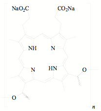
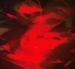
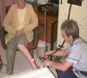
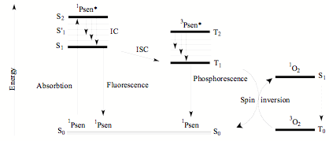
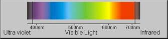

Photodynamic therapy (PDT) is a technique that makes uses of light, a photosensitizer and molecular oxygen to orchestrate programmed cell death in various biological systems due to the resultant generation of highly reactive oxygen species (ROS).(1)
The principle of using light for the treatment of disease has been known for centuries and has been traced as far back as to the ancient Egyptians (about 4000 years ago) who successfully utilized light in conjunction with orally ingested Amni Majus plant in the treatment of vitiligo, a skin disorder of unknown cause.(2) In the late nineteenth century, Finsen demonstrated the successful use of heat filtered light from a carbon arc lamp in treating lupus vulgaris, a tubercular skin condition, which earned him a Nobel prize in physiology and medicine in 1903.(3) In the early twentieth century, the first account of PDT being used for treatment of solid tumors (cancer) was reported by the Von Tappeiner’s group in Munich.(4, 5) Much later, in the late 1980s, further studies culminated in the development of the photosensitizer Photofrin (Figure 1) which in 1993 was approved by the Canadian health agency for the treatment of bladder cancer and later in Japan, USA and some European countries for treatment of certain esophageal cancers and non-small cell lung cancers.(6)

Figure 1. Structure of Photofrin, n = 1-9.
The structure of Photofrin has been found to be oligomeric in nature and consists of a number of porphyrin monomers, with each monomer comprising of a basic tetrapyrrolic porphine scaffold (four pyrrole sub-units interconnected by four methine groups).
The success of PDT treatment is attributed to the fact that it is highly selective, allowing for the targeting of cancerous tissue without the collateral damage that can be associated with other cancer chemotherapeutic agents. Based on the fact that diseased cancerous tissue is metabolically more active that healthy tissue, after administration, the photosensitizer readily accumulates in the rapidly dividing cancerous tissue.(1) Once the photosensitizer has accumulated in the cancerous tissue, it remains inactive until activated by an external source of light irradiation. Light of the correct wavelength is then directed at the tumor site electronically exciting the photosensitizer which subsequently transfers this excitation to molecular oxygen (triplet oxygen) contained within the tissue cells to form cytotoxic singlet oxygen, as well as other ROS.(7) It is these resulting products that attack cellular components such as DNA and proteins resulting in cell lysis and eventual death. An outline adapted from Josefsen and Boyle (6) showing this overall process is depicted below in Figure 2.

Figure 2. The Stages of Photodynamic Therapy
 
Figure 3. Applications of External Irradiation
The generation of singlet oxygen results from the reaction between the excited triplet state photosensitizer (3Psen*) and the ground state molecular oxygen (3O2) via a type II process which is a spin allowed transition. The triplet state photosensitizer is previously formed as a result of intersystem crossing (ISC) from the excited singlet state photosensitizer which forms as a result of the absorption of external irradiation. An energy diagram adapted from Josefsen and Boyle (6) that highlights the formation of singlet oxygen is depicted below in Figure 4.

Figure 4. Formation of Singlet Oxygen
As mentioned earlier, Photofin (Figure 1) was the first PDT photosensitizer to be approved for clinical use however it is far from ideal as it possesses prolonged patient photosensitivity resulting from poor clearance from the body, as well as poor long wavelength absorption. Ideally, photosensitizers must absorb at longer wavelengths such as in the red or near infrared region of the electromagnetic spectrum (Figure 5), as this allows for deeper tissue penetration.(8)

Figure 5. Electromagnetic spectrum
Ever since the approval of Photfin, researchers from around the globe have been trying to develop new PDT photosensitizers.(6) A large number of metal-macrocycle complexes have more recently been developed for use as photosensitizers with varied photodynamic consequences. Two metal containing PDT photosensitizers of interest that will be briefly discussed in this report are Purlytin and Lutex.
Purlytin (Figure 6) is a drug marketed by Miravant Medical Technologies in Santa Barbra, California, USA. It has been successfully used in the treatment of non-malignant conditions of psoriasis and restenosis.(6) It has also undergone Phase II clinical trials in the USA for PDT treatment against cutaneous metastatic breast cancer and Kaposi’s sarcoma in HIV patients.(6)

Figure 6. Structure of Purlytin
Purlytin contains a chlorin macrocyclic scaffold with a tin atom bound in the central cavity. The presence of the chelated tin atom has shown to alter the electronic nature of the chromophore causing a red shift (20-30 nm) in its absorption as compared to the metal-free chlorin. This gives rise to a photosensitizer with an absorption range of 650-680 nm in the electromagnetic spectrum.(6)
Lutex (Figure 7) is a drug marketed by Pharmacyclics, California, USA. Lutex has entered Phase II clinical trials in the USA for testing against breast cancer and malignant melanomas.(6) Lutex contains a texaphyrin scaffold with a centrally chelated lutetium atom in its ligation site. The texaphyrins are derivatives of porphyrins but instead possess a penta-aza central core. The following molecule was shown to have a maximum absorption in the 730-770 nm range of the electromagnetic spectrum which deems this drug to be a highly promising candidate for deeper PDT applications. Interestingly it has been shown that the presence of the central metal atom in the texaphyrin scaffolds plays a huge role in the photoactivation as the ligand derivatives alone show little absorption.(6)

Figure 7. Structure of Lutex
References
(1) Josefsen, L. B.; Boyle, R. W. “Photodynamic therapy: novel third-generation photosensitizers one step closer?” British Journal of Pharmacology 2008, 154, 1-3.
(2) Edelson, M. F. “Light-activated drugs.” Scientific American 1988, 259, 68–75.
(3) Bonnett, R “Photosensitizers of the porphyrin and phthalocyanine series for photodynamic therapy.” Chemical Society Reviews 1995, 24, 19–33.
(4) Sternberg, E. D.; Dolphin, D.; Brückner, C. “Porphyrinbased photosensitizers for use in photodynamic therapy.” Tetrahedron 1998, 54, 4151–4202.
(5) Allison, R. R.; Mota, H. C.; Sibata, C. H. “Clinical PD/PDT in North America: an historical review.” Photodiagnosis and Photodynamic Therapy 2004, 1, 263–277.
(6) Josefsen, L. B.; Boyle, R. W. “Photodynamic Therapy and the Development of Metal-Based Photosensitisers.” Metal Based Drugs 2008, 1-24.
(7) Farrer, N. J.; Sadler, P. J. Aust. J. Chem. 2008, 61, 669–674.
(8) Patrice, T. Photodynamic therapy Royal Society of Chemistry, 2004, 260.
Image Credits
Light application 1
Light application 2
Author: Allan Prior
- Alzheimer's 1 2
- Antibiotics
- Antifouling Paint
- Arthritis
- Ayurvedic Medicine
- Breast Feeding
- Cancer Therapy
- Cattle Feed
- Cerebral Ischemia
- Chelation Therapy
- Chernobyl
- Chicken Feed
- Chocolate
- Cigarettes
- Coal 1 2
- Copper Mining
- Cremation
- Diabetes
- Electronic Waste
- Hat Making
- Hard Metal Disease
- Hybrid Cars
- Imaging 1 2 3 4
- Industrial Pollution
- Jewelry Allergy
- Lead Poisoning
- Lewisite
- Magnetic Particles
- Makeup
- Mountain Top Removal
- MRI Imaging
- Neurotoxicity
- Nuclear Power
- Nuclear Weapons
- Ouch Ouch Disease
- Peripheral Neuropathy
- PET Imaging
- Photodynamic Therapy
- Phytoremediation
- Pregnancy
- Radioactivity 1 2
- Seafood
- Sunscreens
- Tattoos
- Vaccines
- Wound Healing